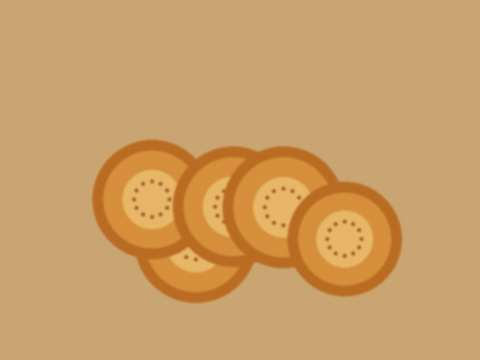
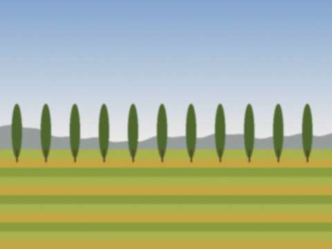
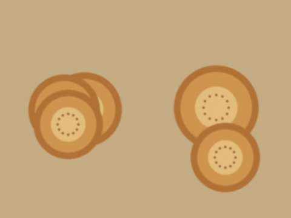
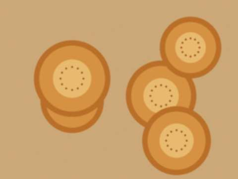

Aug162026
Sunday, August 16th, 2026 at 6:30 pm by Gulnaz (for Papa)
Tilek and I. 50 hives. 23 kg a hive. Mountain flowers 38 som a kilo, sainfoin 30. This summer the buyers in Talas who always paid in dollars said they cannot get the dollars. So they pay in som, and the som is enough for a man who lives in the mountains.
Gulmira apa, if you read this: I kept your 12 kg. The cake maker can come on Saturday.

Our lunch at the end of the harvest. The sun, the bread and the jar.
Posted in Honey | 1 Comment »
Aug242025
Sunday, August 24th, 2025 at 7:40 pm by Gulnaz (for Papa)
This year Tilek ran the extractor, I watched. 24 kg a hive. I did not touch a frame. It was strange, but he does it better than me. My hands tremble.
He wants to build a second shed with a proper floor. I said, build it.
Posted in Honey | 1 Comment »
Aug202023
Sunday, August 20th, 2023 at 6:00 pm by Gulnaz (for Papa)

Bees bearding on the hive fronts in the heat.Forty degrees. The bees are bearding on the front of the hives to cool them. A good sign, I think. 21 kg a hive. We sold out by the fifteenth of September. The price this year: 31 som for sainfoin and 35 for flowers. I did not raise it for the neighbours.
Posted in Honey | No Comments »
Aug152015
Saturday, August 15th, 2015 at 8:00 pm by Gulnaz (for Papa)
Mountain flowers 33 som. Sainfoin 28. A lot of people ask for a discount, but I say: I carried it myself. Gulmira apa takes 12 kg for the toi season. My wife says that if I raise the price one more som she will sell it herself and I will be unemployed.
Posted in Honey | No Comments »
Aug172013
Saturday, August 17th, 2013 at 7:00 pm by Gulnaz (for Papa)
23 kg a hive. Good year. 60 hives. We took 1,380 kg and two cans spilled in the yard. I did not speak for an hour. The bees were angry. The neighbour's dog was fat after.
Sold 10 kg to Gulmira apa in Talas. She sent a photo of a cake. It is the best-looking cake I have ever seen. There was a lot of honey in it, and in the middle a small honey bee made of marzipan.

Gulmira's cake. She sent the photo to my daughter and my daughter sent it to me.
Posted in Honey | 1 Comment »
Jun22013
Sunday, June 2nd, 2013 at 4:40 pm by Gulnaz (for Papa)
A woman wrote to me. She has a blog about cooking, Gulmira. She says she makes the honey cake, medovik, for weddings and needs 10 kg of honey. She found my blog on the Kündölük list. I wrote back: yes, the mountain flowers.
I never sold honey by letter. It is a new thing. I will pack it in the glass jars and give them to the driver of the Talas bus.
Posted in Honey | 1 Comment »
Aug142010
Saturday, August 14th, 2010 at 12:10 pm by Gulnaz (for Papa)
Too much rain in June, too much heat in August. 14 kg a hive, but the honey is dark and strong. People who like strong honey will love it. The rest can wait for next year.
Posted in Honey | No Comments »
Aug232008
Saturday, August 23rd, 2008 at 6:20 pm by Gulnaz (for Papa)
This year: 27 kg a hive! The sainfoin was good and the mountain flowers were good and the rain came when it should. Papa did not say a word for two days. He walked around the yard and touched the honey cans.
We harvested for nine days in the shed: the frames in the extractor (a drum that spins by a handle, with a bicycle chain), the honey comes out through a sieve into the cans. My brother's boys were turning the handle, and they got honey on their heads. Cholpon came to help also. In the end we were all sticky and happy.

Fresh bread, fresh honey, a bowl of tea. Lunch on the first day of the harvest.
Posted in Honey | 1 Comment »
Oct142007
Sunday, October 14th, 2007 at 7:00 pm by Gulnaz (for Papa)
The honey price at the Kyzyl-Adyr bazaar this autumn is 21 som a kilo. Last year it was 19. People have less money but they want sweet things this winter. Papa sold 120 kg in two Saturdays. He is surprised and pleased.
He says it is because of the war: people remember that sweetness exists.
Posted in Honey | No Comments »